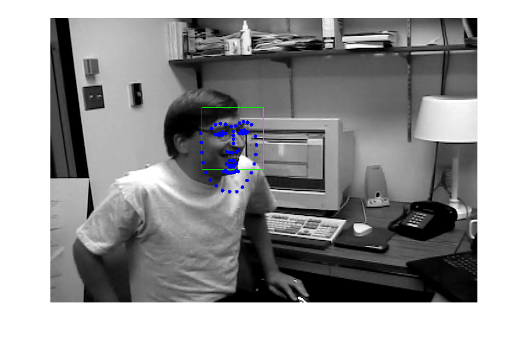

Face landmark detection in a video
Face landmark detection in a video running at real time.
This demos lets you detect landmarks of detected faces in a video. It first detects faces in a current video frame and then finds their facial landmarks.
Example video: http://www.youtube.com/watch?v=ZtaV07T90D8.
Sources:
Contents
Options
% [INPUT] path to input video vid = fullfile(mexopencv.root(),'test','dudek.webm'); % [INPUT] path to binary file storing the trained model to load modelFile = fullfile(mexopencv.root(),'test','face_landmark_model.dat'); if exist(modelFile, 'file') ~= 2 % download model from GitHub disp('Downloading model (~ 69MB)...') url = 'https://cdn.rawgit.com/opencv/opencv_3rdparty/contrib_face_alignment_20170818/face_landmark_model.dat'; urlwrite(url, modelFile); end % [INPUT] path to the cascade xml file for the face detector xmlFace = fullfile(mexopencv.root(),'test','lbpcascade_frontalface.xml'); download_classifier_xml(xmlFace); % name of user-defined face detector function faceDetectFcn = 'myFaceDetector'; assert(exist([faceDetectFcn '.m'], 'file') == 2, 'missing face detect function'); % width/height to scale images, as larger images are slower to process scale = [600 600];
Init
create instance of the face landmark detection class, and set the face detector function, then load the pre-trained model
obj = cv.FacemarkKazemi(); obj.setFaceDetector(faceDetectFcn); obj.loadModel(modelFile);
Video
open video, and prepare figure
cap = cv.VideoCapture(vid); assert(cap.isOpened(), 'Failed to load video'); img = cap.read(); assert(~isempty(img), 'Failed to read frame'); hImg = imshow(img);
Detect
main loop: read each frame and detect faces and the landmarks corresponding to each shape detected, then display the current frame
while ishghandle(hImg) % read frame img = cap.read(); if isempty(img), break; end % detect faces %img = cv.resize(img, scale); faces = obj.getFaces(img); if ~isempty(faces) % draw bounding box img = cv.rectangle(img, faces, 'Color',[0 255 0]); % detect face landmarks [shapes, success] = obj.fit(img, faces); if success % draw face landmarks for i=1:numel(shapes) img = cv.circle(img, shapes{i}, 3, 'Color',[0 0 255], 'Thickness','Filled'); end end end % show frame + results set(hImg, 'CData',img) drawnow end cap.release();
Helper function
function download_classifier_xml(fname) if exist(fname, 'file') ~= 2 % attempt to download trained Haar/LBP/HOG classifier from Github url = 'https://cdn.rawgit.com/opencv/opencv/3.4.0/data/'; [~, f, ext] = fileparts(fname); if strncmpi(f, 'haarcascade_', length('haarcascade_')) url = [url, 'haarcascades/']; elseif strncmpi(f, 'lbpcascade_', length('lbpcascade_')) url = [url, 'lbpcascades/']; elseif strncmpi(f, 'hogcascade_', length('hogcascade_')) url = [url, 'hogcascades/']; else error('File not found'); end urlwrite([url f ext], fname); end end % The facemark API provides the functionality to the user to use their own % face detector. The code below implements a sample face detector. This % function must be saved in its own M-function to be used by the facemark API. function faces = myFaceDetector(img) persistent obj if isempty(obj) obj = cv.CascadeClassifier(); obj.load(xmlFace); end if size(img,3) > 1 gray = cv.cvtColor(img, 'RGB2GRAY'); else gray = img; end gray = cv.equalizeHist(gray); faces = obj.detect(gray, 'ScaleFactor',1.4, 'MinNeighbors',2, ... 'ScaleImage',true, 'MinSize',[30 30]); end